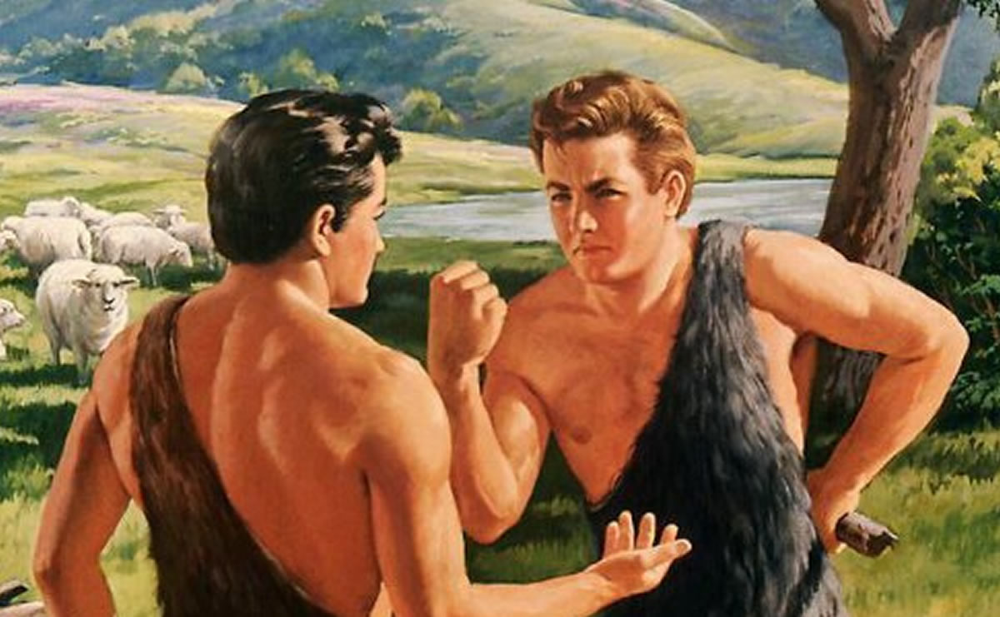
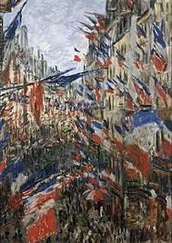

Cain y Abel: El socialismo y el liberalismo, dos hermanos que se odian
A más de 200 años de la Revolución Francesa y la Revolución Industrial, un análisis sobre el origen de las dos principales ideologías que formaron a la modernidad

Caín y Abel, hijos de Adán y Eva, de acuerdo a La Biblia. Caín, en un ataque de celos, mata a Abel luego de que Dios prefiera el sacrificio de Abel antes que el suyo.
A lo largo de la modernidad, el socialismo y el liberalismo se construyeron como ideologías antagónicas. Algo muy llamativo es que, a pesar de ser tan distintas, tienen un mismo origen ideológico: la “doble revolución” (Hobsbawn, 1979: 294-301). Este es un término que utiliza el famoso historiador Eric Hobsbawn en su obra Las Revoluciones Burguesas para referirse a la Revolución Industrial y a la Revolución Francesa. Hobsbawn explica que ambos procesos tuvieron una incidencia fundamental en los marcos ideológicos que van a tener epicentro en Europa y van a comenzar a circular a otros espacios, como Estados Unidos y los espacios coloniales a finales del siglo XVIII.
Tal como explica el historiador inglés, esta “doble revolución” formó dos opiniones contradictorias: “la de quienes aceptaban el rumbo que el mundo seguía y la de quienes no la aceptaban: en otras palabras, los que creían en el progreso y los otros” (1979:282). Es decir, la ideología liberal y la socialista fueron difundidas bajo la idea del progreso, en contraposición a las ideas oscurantistas y absolutistas que tenían un componente religioso.
Ambas ideologías se sustentan en la creencia que “la sociedad humana y el individuo podían perfeccionarse por la misma aplicación de la razón, y que estaban destinados a su perfeccionamiento en la historia” (1979:282). El progreso consiste en aspirar a maximizar la felicidad de la población. Las discrepancias aparecen en el "¿cómo?" de la cuestión. Es decir, ¿cómo se aspira a la felicidad de la población? ¿Cómo es este progreso? También, había algunos "¿qué?" dando vueltas. Por ejemplo, ¿qué es la igualdad? ¿Igualdad ante la ley? ¿Igualdad social? Y, ¿qué es la libertad? ¿Libertad económica? ¿Es obrar en propia voluntad?
Hacé click aquí para leer la nota completa.
El lado B de la Revolución Rusa
Lo que ocurrió en 1917 en la actual Rusia fue uno de los hitos más importantes de la modernidad. Fue la primera experiencia de un estado socialista. Si bien es muy conocida la historia de la Revolución Rusa, no es tan conocido lo que ocurrió después de 1917. Es muy interesante narrar y analizar lo que fue la Unión Soviética de Iosif Stalin para poder entender en qué medida se puso en práctica la teoría de la revolución rusa. En otras palabras, ¿fue la Unión Soviética de Stalin, la que tenía en mente Marx?
Sheila Fitzpatrick explica en La revolución rusa que la transición de la revolución a la posrevolución se puede dividir en 3 etapas: revolución cumplida, revolución traicionada y el terror. Como explica la autora: “Decir que la revolución había triunfado equivalía a decir que la revolución había terminado” (2005:191), y este proceso se da cuando Stalin anuncia la construcción de un “nuevo hombre soviético” en 1930.
Hacé click aquí para leer la nota completa.
Los nacionalismos del siglo XIX
En un momento donde los nacionalismos están tan presentes, y donde muchas fronteras aún están en disputa, esta nota analiza la fundación del nacionalismo, los cambios que llevó a cabo durante finales del siglo XIX, y desarrolla sobre la importancia del elemento nacional para la formación de los estados, la construccion de una legitimidad del poder y el control sobre las masas.
Hace un poco más de 200 años el mundo comenzó a dividirse geográficamente gracias a la aparición de una nueva característica que cada individuo debía tener: su nacionalidad. Los nacionalismos llegaron para homogeneizar a la población de un mismo territorio, pero también para marcar una distinción entre la población de un determinado territorio y aquellos habitantes que no formaban parte del mismo.
Hacé click aquí para leer la nota completa.
De la Revolución Francesa en adelante: cómo se construyó el mundo moderno
Lo que ocurrió en 1789 en Francia fue un punto de quiebre para la humanidad. Las nuevas ideas de progreso, que se venían gestando desde hacía varios años en espacios como el francés, se difundieron por toda Europa y posteriormente en otras zonas, amenazando a los antiguos regímenes monárquicos, y estableciendo nuevos sistemas de gobierno, como las repúblicas. Estos cambios políticos vinieron de la mano de nuevas ideologías progresistas, donde se destacan el liberalismo, el socialismo y el nacionalismo.
El liberalismo fue producido y reproducido en el Reino Unido de la Revolución Industrial. Y fue el descontento en un sector de la sociedad, la clase obrera, lo que permitió que gane terreno el socialismo. Esta ideología se va a nutrir de la exposición de las contradicciones internas del capitalismo. Bajo estas ideas socialistas, se impulsa la Revolución Rusa, siendo así el primer experimento a gran escala de un estado socialista.
Por otro lado, la construcción de una identidad nacional permitió la división territorial de los nuevos estados europeos. A lo largo del mundo, distintos pueblos comenzaron a entender que tenían el derecho de autodeterminación y, en consecuencia, lucharon por conseguir un espacio territorial, el cual pudieran administrar, formando de este modo un estado. Lo cierto es que el nacionalismo fue una herramienta muy poderosa para unificar a la población y controlar a las masas. Bajo la bandera nacional se llevaron a cabo guerras, genocidios, conquistas en otros continentes, entre otras atrocidades. Sin ir más lejos, el fascismo se va a construir bajo esta estructura nacionalista (para profundizar en este tema, leer: “El nacionalismo, un elemento crucial para la formación de fascismos en Europa”).

Imagen representativa del nacionalismo francés